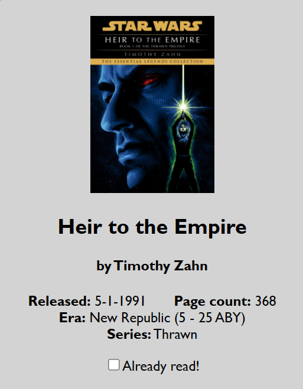
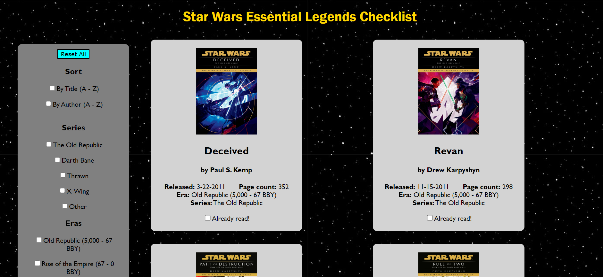

In this project, my task was to develop an interactive interface that 1) presents data in an organized format and 2) allows users to change how the data is being presented.
To create the finalized interactive website I learned how to use React, a popular JavaScript library that allows for information to be passed between functions as components. More importantly, React provides states in which storage of information can be changed based on user input.
The table below is a summary of the requirements I needed for my interface.
| Requirements | Explanation |
| Include twelve or more item cards, the visual displays of data that the user is able to select and sort/filter. |
Each card will display: |
| Have access to one or more sorting categories. |
Examples: |
| Have access to two or more filtering categories. |
Examples: |
| Include an aggregator to which items can be added. |
Display should include: |
For my interface, I chose to create a book checklist. I believed a checklist
would be a great way to incorporate all of the elements above while providing
an easily navigbale interface for any user.
To personalize this project, I chose to display books from the
Star Wars Essential Legends Collection
an ongoing project of book reprints
from the Star Wars universe.
| Item Card Example |
 |
| Sorting |
|
| Filtering |
|
| Aggregator |
|
In my approach for implementing sorting and filtering, I decided to a mutable Set that contained every applicable filter at the current state. In this matter, each state would only display the books whose cateories corresponded with the active filters. Using React states, these goals were translated into code.
The line below takes in the entire dataset of my books, aptly named bookData, as the initial state. Using setState, this would be updated accordingly in functions written elsewhere in the code.
const [state, setState] = useState({books: bookData});
Similarly, the line below declares an empty set representing the current state's set of filters. To update with setFilters, I made use of an input button within each book item card
const [filters, setFilters] = useState(new Set());
Within App.js, data is passed frequently between functions and handlers to update information instanteneously with each user input. The most notable function is the sortAndFilter function which takes in several props: a book set (books), a filter set (filters), a checklist set (bRead), and some booleans (nSort, aSort, checked). Passsing all of this information in at once allows me to perform a series of calls to .sort and .filter, depending on what is currently 'active', to then return a new set of books that will replace the current state's book set.
All changes in states occur when the user decides to check or uncheck a box. There are four
different assignments of checkboxes present throughout the site: 1) sorting, 2) filtering,
3) displaying checklist items and 4) adding/removing books to the checklist. For each of these actions,
I have written out some const handler that makes use of React states to update information that is
shared between all componentes of the App.
I had to ensure that books that had been checked would remain checked even if a filter
caused the book to disappear from display. This was the foundation for my boolean state
structure in which I use the onChange event of the checkboxes to update booleans representing
what filters/sorts are triggered. This made it easy to then call a sort and filter function
without encountering conflicts of what was and wasn't checked.
One last important state change is the handleReset const that I represent as a button on the screen.
This triggers all the useState declarations I have such that we return to the original state of the site.
This also triggers a forEach loop on all of the 'checked' booleans of the checkboxes to return to false
so nothing is checked once reset.
